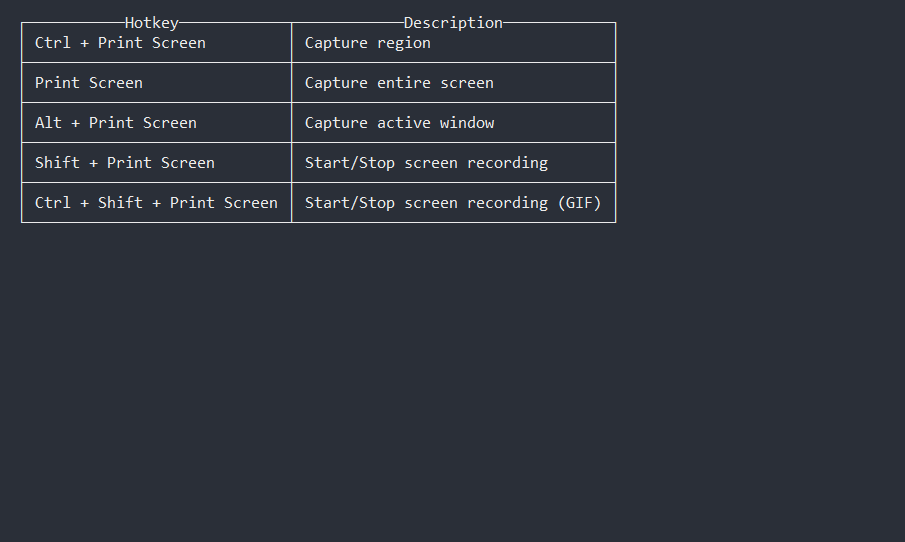

This is a sample markdown file to show how to format an article with markdown. It's used to test the conversion to HTML.
Headings
h1 Heading
h2 Heading
h3 Heading
h4 Heading
h5 Heading
h6 Heading
Basic Formatting
Line Continuation
By default Markdown adds paragraphs at double line breaks. Single line breaks by themselves are simply wrapped together into a single line. If you want to have soft returns that break a single line, add two spaces at the end of the line.
This line has a paragraph break at the end (empty line after).
Theses two lines should display as a single
line because there's no double space at the end.
The following line has a soft break at the end (two spaces or a \ at end)
This line should be following on the very next line.
Text
This is bold text
This is bold text
This is italic text
This is italic text
Strikethrough
Bullet lists
- Carrots
- Tomatoes
- Radishes
- Something
- Another thing
- Last item
Numbered list
- First
- Second
- Third
Nested list
- First, get these ingredients:
- Boil some water.
- Dump everything in the pot.
Hyperlinks
If you don't have Blender installed on your computer, download the latest version here
Images
Simple Image

Image with alt text
Simply add text between the square brackets of an image tag to add alt text. This text should shortly explain what's going on in the image. Every image needs alt text before an article is published!
Image with alt and caption text (RWHTML specific)
You can add a caption to an image by ending the alt text with a pipe '|' and adding the caption text after.
[caption id="attachment_2" align="aligncenter" width="638"]What a pretty screen![/caption]
Notes
Simple Note
Note: Don't see the elements above? Simply select File ► New ► General to generate a default scene.
Multi line Note
Note: Don't see the elements above? Simply select File ► New ► General to generate a default scene.
This is another line.
Here's another one.
Note With Image
Note: Remember, you can add images to notes!
Spoiler (RWHTML specific)
[spoiler title="Solution Inside: Can't remember how to scale?"]
Press the S key, move inwards with your cursor and click to confirm.
[/spoiler]
Code
Inline Code
Add the Run() method below var Location = "World"
Code Block
Add the language right behind the three ticks. This will enable syntax highlighting.
// Loop and spit stuff out to the console
for(var i=0; i++; i < 10)
{
Console.WriteLine(i);
}
Where to Go From Here?
Every article needs to end with an "Where to Go From Here?" section. The converter checks for this and will warn if it's missing.